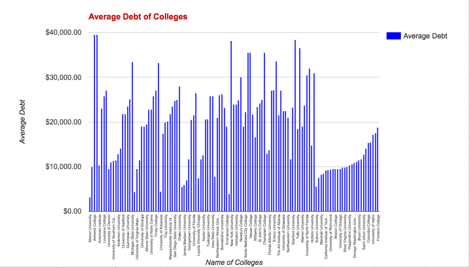

What are we doing?
The Southern Belles are focusing on how a students’ college choice affects their career path/success in a changing workforce that relies increasingly on technology. Through compilation of big data, or data that is too large to process using manual techniques, we were able to quantify the trends in college selection based off of variables such as graduation rate, average debt after graduating, and median salary after attending. These trends are useful for choosing the correct college for you and being aware of the necessary skill sets that are required for a changing workforce.
Money
Money is important. It fuels the economy and controls most aspects of our day to day lives. Considering this. choosing an economically sensible school is very important. Ask any businessman or businesswoman, Return on Investment is key for any company or corporation to stay competitive in a saturated market. Therefore, why look at colleges any diffently? If you graduate with more debt than your average annual salary, then that college has not done a successful job of being affordable and preparing you for the changing workforce

This bar graph shows the average debt for 120 major colleges and universities in the U.S. As the cost of college goes up, the need for the correct skillset as students enter a changing workforce has never been higher
Why did we choose this project?
As students about to start the college application process, we found this subject extremely relatable and relevant for our project. There are many misconceptions and miscommunications in the College world that get spread through word of mouth and taken as fact. This misinformation can completely change a student’s decision. It is important that prospective students are provided with the facts and statistics so that they can make informed decisions to ensure their success. Intrigued by what we learned this week around the changing workforce and the future of automated work, we wanted to take a deeper look into which U.S. universities are equipping students with the needed skills to thrive in their careers.

This scatterplot shows the top 120 schools in the nation. We crossreferenced the median salary for students and the average debt accumulated after graduation. Schools such as Harvard and MIT obviously have higher average salaries than other schools, but are sub-par in cost of attendance. However, schools such as UCLA have high return on investment with a high median salary and low cost of attendance.
Changing Workforce
The workforce of tomorrow is rapidly turning into one controlled not by people, but by lines of code and algorithms. Knowing how to manipulate and utilize code will give any graduate a leg up in the competitive job market of tomorrow. Automation is seeping it's way into every career choice, from medicine to retail. Automation is rapidly replacing many common jobs such as cashiers (3.4 Million employees in the US) and truck drivers (3.5 Million employees) which means the need for unskilled labor is going decline. Therefore, it is upon the student to possess the necessary skills to survive in an automated workforce.
What we would do if we had more time
If the Southern Belles had more time to work on our project we would delve into predictive analytics of what jobs are going to be in demand in the future. This would be a cool way for students to prepare ahead of time for something that hasn’t happened yet.
Conclusion
The workforce of tomorrow is not going to be the same workforce of today. Preparing for this shift requires looking around the corner and seeing what is coming next. As automation becomes more prominent in the workplace, skilled, technical laborers are going to be harder to find. The languages of the future are computer programming languages as the world becomes more dependant on technology in the workforce. Looking ahead, students can select colleges that are not only affordable, but also can get them well versed in the language of the future, regardless of their major to better prepare them for the work of the future.